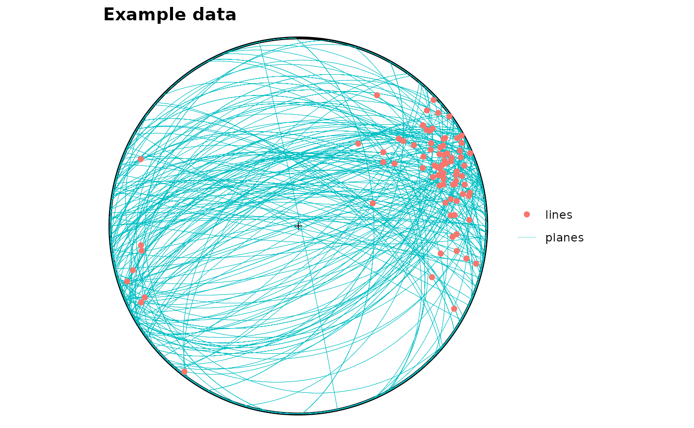
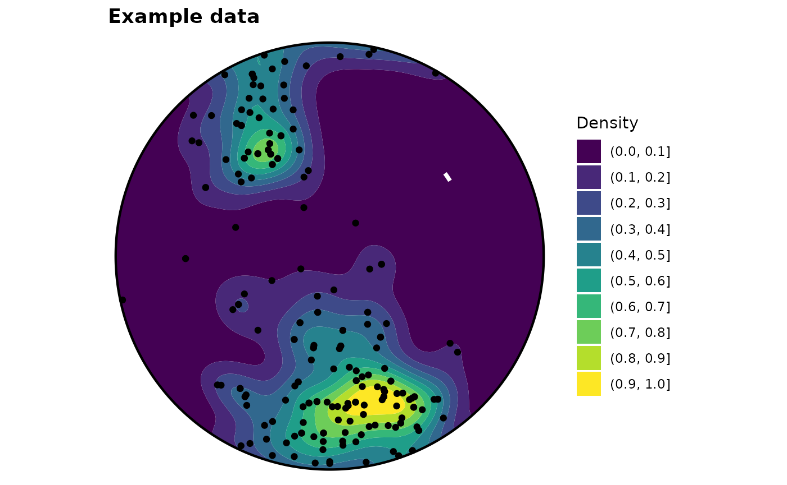

Orientation Plots with ggplot
Tobias Stephan
2025-11-03
Source:vignettes/Plots_ggplot.Rmd
Plots_ggplot.RmdThis tutorial shows how to create orientation plots using ggplot2 in R with the help of the structr package.
Import and convert to spherical objects:
data(example_planes)
planes <- Plane(example_planes_df$dipdir, example_planes_df$dip)
lines <- Line(example_lines_df$trend, example_lines_df$plunge)Stereographic projection
ggstereo() +
geom_point(data = gg(planes), aes(x, y, color = "planes")) +
geom_point(data = gg(lines), aes(x, y, color = "lines")) +
labs(title = "Example data", color = NULL)
Adding great circles:
ggstereo() +
geom_path(data = ggl(planes), aes(x, y, color = "planes"), lwd = .1) +
geom_point(data = gg(lines), aes(x, y, color = "lines")) +
labs(title = "Example data", color = NULL)
Statistics
quality <- runif(nrow(lines), min = 1, max = 45) # assigning a random quality score to the data (can be replaced with real data)
lines_mean <- sph_mean(lines, w = 1 / quality)
lines_delta <- delta(lines, w = 1 / quality)
ggstereo() +
geom_point(data = gg(lines, quality), aes(x, y, size = quality)) +
scale_size("Quality", range = c(3, .1)) +
geom_path(data = ggl(lines_mean, d = lines_delta), aes(x, y, color = "Std"), lwd = .1) +
geom_point(data = gg(lines_mean), aes(x, y, color = "Mean"), size = 5, shape = 17) +
labs(title = "Example data", color = NULL)
Density plots
ggstereo() +
geom_contourf_stereo(gg(planes), show.legend = TRUE, norm = TRUE) +
scale_fill_viridis_d("Density") +
geom_point(data = gg(planes), aes(x, y)) +
labs(title = "Example data", color = NULL)
Facets
area_l <- LETTERS[sample.int(3, nrow(lines), replace = TRUE)]
area_p <- LETTERS[sample.int(3, nrow(planes), replace = TRUE)]
lines_df <- gg(lines, area = area_l)
planes_df <- ggl(planes, area = area_p)
ggstereo(data = lines_df, aes(x = x, y = y, color = area)) +
geom_path(data = planes_df, aes(x = x, y = y, group = group), alpha = .25, color = "grey") +
geom_point() +
facet_wrap(vars(area)) +
labs(title = "Example data", color = NULL)